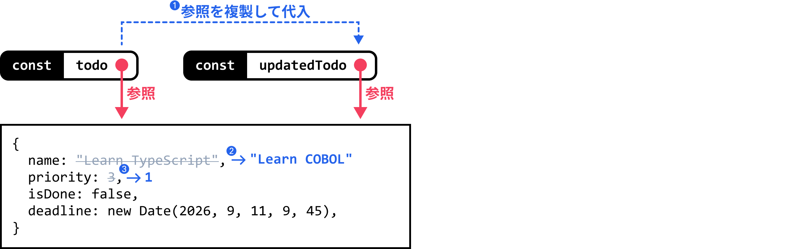
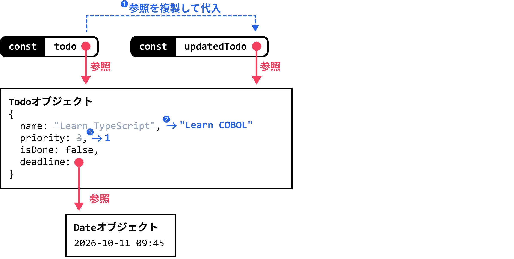
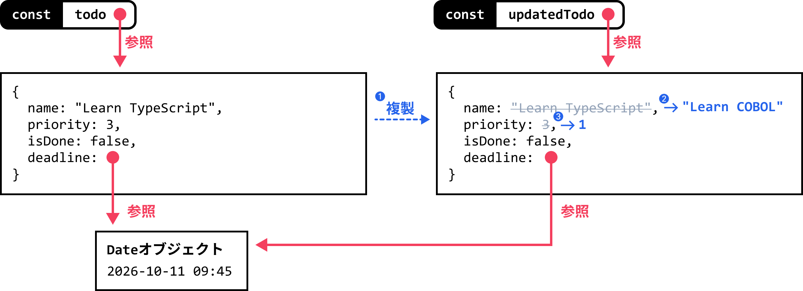
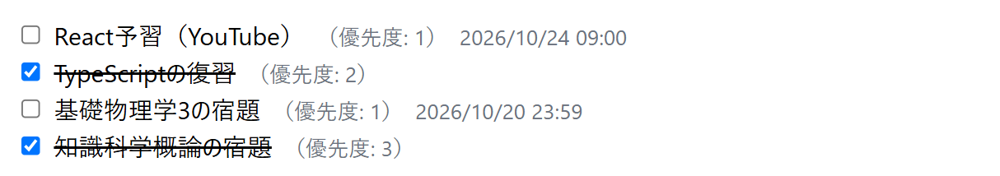
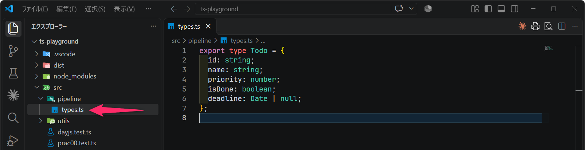
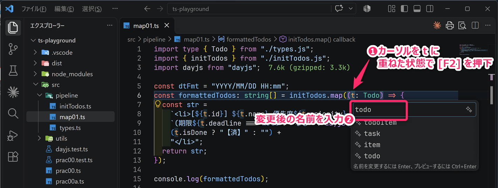
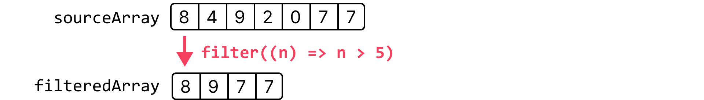
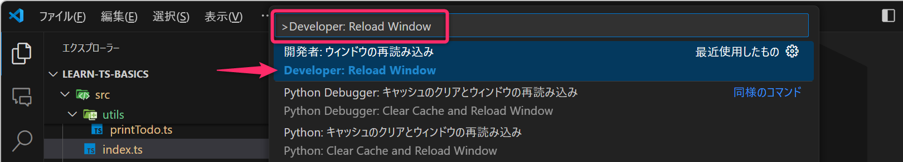
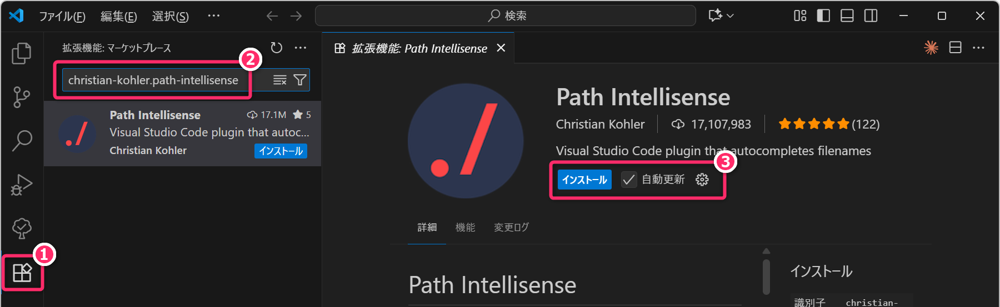
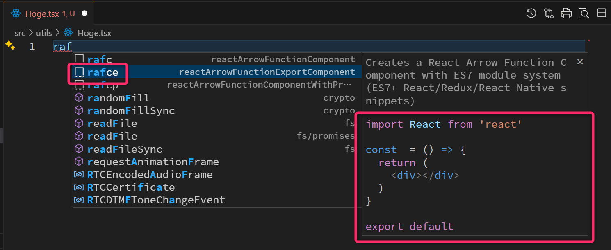

1 今回の授業概要と連絡
本科目は「学修単位科目」です。1回の授業あたり「4時間相当の授業時間外学習」を前提としたボリュームと展開速度となっています。何かと忙しいとは思いますが、授業以外の時間も確保して取り組んでください。
1.1 小テスト❷
「小テスト❷」を実施します。筆記用具を準備しておいてください。
1.2 今回の達成目標
map・filter・sortを使って「Todo 配列」の更新・抽出・並び替えができる。- 元の配列や Todo を変更せずに新しい配列を作り、元データと戻り値の参照の違いを説明できる。
- 配列の操作を関数にまとめ、用意した Vitest のテストで、処理結果と元データが保たれていることを確認できる。
1.3 ここまでの流れ
後期中間試験ぐらいまでの授業の流れ (予定)
- モダンTypeScript基礎学習のための環境構築 済
- TypeScript基礎学習 ← 前回と今回の授業のメイン
- React / Next.js 開発に関連する文法や機能だけを集中的に学びます。
- Reactを使ったTodoアプリのための環境構築 ← 次回 (第04回講義)
- Todoアプリ開発（Reactによるフロントエンド開発）のチュートリアル
- こちら のような「✏️Todoアプリ」を実装・デプロイしていきます。
- Todoアプリのカスタマイズや作り込み 👉 後期前半の大課題
2 前回の復習
第01回から使っている ts-playground を VSCode で開いてください。今回も src フォルダのなかに TypeScript のファイルを作成して、プロジェクトルートのターミナルから各種コマンドを実行します。
例えば src/prac07.ts に対して、次のコマンドで動作確認 (型チェックと実行) できました。
npm run typecheck
npx tsx src/prac07.ts npm run typecheckは、src フォルダのなかのすべての*.tsを対象に実行されます。演習途中の未完成なコードで型エラーが出ているときは、そのファイルを完成させてから先に進むようにしてください。
前回の講義資料に従って .vscode\tasks.json を適切に記述できていれば、対象の
TypeScript ファイルのタブがアクティブな状態で [Ctrl]+[Shift]+[B]
の押下で動作確認することもできました。
また、package.json
を適切に記述できていれば、以下のコマンドでホットリロード（ファイルの変更を検知して、自動的に再実行する仕組み）を利用してプログラムを実行できました。
npm run dev src/prac07.tsここからは、前回講義の Reactにおける状態 (オブジェクト) の更新 ～概要～ について、ある程度、理解していることを前提 とした解説になります。
- スプレッド構文 などの理解が怪しい場合は、再度、前回の講義資料を読み直してください。
2.1 オブジェクトのプロパティを変更するための2つのアプローチ
前回の講義では、ユーザー定義型の オブジェクトを更新 する場合 (主としてオブジェクトのプロパティ (属性) を変更する場合) には、似ているようで大きく異なる2つの方法 (アプローチ) が存在することを解説しました。
2.1.1 その1: ミュータブルなオブジェクト更新
1つめに示したミュータブルなオブジェクト更新 (mutableApproach.ts) は、次のように オブジェクトの属性を直接的に変更する方法 でした。
import type { Todo } from "./types.js";
const todo: Todo = {
name: "Learn TypeScript",
priority: 3,
isDone: false,
deadline: new Date(2026, 9, 11, 9, 45),
};
// ▼▼▼ ここから
const updatedTodo = todo; // ➊
updatedTodo.name = "Learn COBOL"; // ➋
updatedTodo.priority = 1; // ➌
// ▲▲▲ ここまでが着目してほしいところ
// updatedTodo と todo の「参照」は同じ (=同じオブジェクト)
console.log("todo !== updatedTodo ---> ", todo !== updatedTodo);
// todo の内容を確認
console.log("■ todo の内容");
console.log(JSON.stringify(todo, null, 2));
// updatedTodoの内容を確認
console.log("■ updatedTodoの内容");
console.log(JSON.stringify(updatedTodo, null, 2));実行結果は、次のようになります。
todo !== updatedTodo ---> false
■ todo の内容
{
"name": "Learn COBOL",
"priority": 1,
"isDone": false,
"deadline": "2026-10-11T00:45:00.000Z"
}
■ updatedTodoの内容
{
"name": "Learn COBOL",
"priority": 1,
"isDone": false,
"deadline": "2026-10-11T00:45:00.000Z"
}mutableApproach.ts の 第11行目 (➊) の
updatedTodo = todo は、( todo
オブジェクトそのものを複製するわけではなく) todo の「参照
(C言語で言うところの ポインタ のようなもの)」の複製を、変数
updatedTodo に格納するための操作となります。
オブジェクトの実体は、変数のなかに直接格納されているわけではありません。変数には「そのオブジェクトがどこにあるのか」を示す情報 (＝実体のありかを示す情報) が入っています。
この情報のことを「参照」と呼びます。C言語で言えば「ポインタ」のようなものですが、ポインタとは異なり、アドレスを使った計算（ポインタ演算）はできません。

そのため、第12行目 (➋) と 第13行目 (➌) は
updatedTodo を対象に操作しているように見えますが、実際には todo と
updatedTodo
が共通して参照しているオブジェクトのプロパティを変更していることになります。そのため、実行結果を確認すると、オリジナルの
todo の name も Learn COBOL
に変更されています。
このようにオリジナルのデータ (todo)
のプロパティを上書きすることから、このようなアプローチは「ミュータブルなオブジェクト更新」や「状態直接操作」や「破壊的更新」などと呼ばれます。
厳密には、deadline に Date
オブジェクトそのものが格納されているわけではありません。
deadline には new Date(...) によって別に作成された Date
オブジェクトへの「参照」が格納されています。そのため、オブジェクト同士の参照の関係まで表すと、次の図のようになります。

この授業のなかでは、このようなオブジェクトの操作を 「ミュータブルなオブジェクト更新」 のように表現していきます。ミュータブル (Mutable) とは「可変な」「変更可能な」という意味になります。
2.1.2 その2: イミュータブルなオブジェクト更新
前回講義では、上記で示したミュータブルなオブジェクト更新とは別に、以下に示す immutableApproach.ts のように「スプレッド構文」を用い プロパティを更新した新たなオブジェクトを生成する方法 についても解説しました。
import type { Todo } from "./types.js";
const todo: Todo = {
name: "Learn TypeScript",
priority: 3,
isDone: false,
deadline: new Date(2026, 9, 11, 9, 45),
};
// ▼▼▼ ここから
const updatedTodo = {
...todo, // スプレッド構文
name: "Learn COBOL",
priority: 1,
}; // ➊～➌
// ▲▲▲ ここまでが着目してほしいところ
// updatedTodo と todo の「参照」は違う (=異なるオブジェクト)
console.log("todo !== updatedTodo ---> ", todo !== updatedTodo);
// todo の内容を確認
console.log("■ todo の内容");
console.log(JSON.stringify(todo, null, 2));
// updatedTodo の内容を確認
console.log("■ updatedTodoの内容");
console.log(JSON.stringify(updatedTodo, null, 2));実行結果は、次のようになります。
todo !== updatedTodo ---> true
■ todo の内容
{
"name": "Learn TypeScript",
"priority": 3,
"isDone": false,
"deadline": "2026-10-11T00:45:00.000Z"
}
■ updatedTodoの内容
{
"name": "Learn COBOL",
"priority": 1,
"isDone": false,
"deadline": "2026-10-11T00:45:00.000Z"
}この方法は、以下の図に示すように、オリジナルのデータ (todo)
は変化させずに、別途、プロパティを変更した新しいオブジェクト
(updatedTodo) を作成するアプローチであり、「イミュータブルなオブジェクト更新」 のように呼ばれます。
- 新しいオブジェクトが生成された証拠に、第19行目 の出力は
trueとなります。

スプレッド構文によるコピーは「浅いコピー (Shallow Copy)
」となります。つまり、外側のオブジェクトは新しくなりますが、deadline の Date
オブジェクトは同じものを参照していることに注意 して下さい。
先ほどの ミュータブル (Mutable) に対して、イミュータブル (Immutable) とは「変更できない」「不変」という意味になります。余談ですが、ミュータブル / イミュータブル などの考え方は「Haskell」や「Scala」などの 関数型プログラミング において重要な概念となってきます。
immutableApproach.ts の 第11行目 から 第15行目 の処理は、以下のコードと等価となります。
const updatedTodo = {
...todo,
}; // ➊
updatedTodo.name = "Learn COBOL"; // ➋
updatedTodo.priority = 1; // ➌なお、スプレッド構文は、Python における アンパック のようなものとイメージしてください。それでも、イメージがつかみづらいときは「生成AI」を利用してみてください。
プロンプト例
JavaScriptにおける「スプレッド構文」のイメージがつかめません。特に「イミュータブルなオブジェクト更新」のために、スプレッド構文を使うという解説を聞いたのですがしっくりきません。具体的なコードを示して分かりやすく解説してください。
2.1.3 定着確認
- 次のプログラムを実行したとき、
a.nameの値を答えよ。- 答え:
"復習" - 解説: a と b
が同じオブジェクトを参照しているため。
- 答え:
- 次のプログラムを実行したとき、
a === bの結果を答えよ。- 答え:
false
- 答え:
- 次のプログラムを実行したとき、
a.nameとb.nameを答えよ。- 答え:
"予習"と"復習"
- 答え:
const todo = { name: "予習", priority: 3, isDone: false };と定義されている。元の todo を変更せず、name を"復習"、priority を1にした新しいオブジェクト updatedTodo を、スプレッド構文により生成する文を記述せよ。- 答え:
const updatedTodo = { ...todo, name: "復習", priority: 1 };
- 答え:
- 次のプログラムを実行したとき、最終的に
b.nameに格納される値を答えよ。- 答え:
"予習" - 解説: 後に書いたスプレッド構文のプロパティで上書きされる。型チェックでも重複するプロパティが指摘されるので、確認後は適切な順序に戻す。
- 答え:
- 次のプログラムを実行したとき、
a.deadline === b.deadlineの評価結果を答えよ。- 答え:
true - 解説: 外側のオブジェクトは新しくなるが、Date の参照は共有される。
- 答え:
- 次のプログラムを実行した後の
a.deadline.getDate()の値を答えよ。なお、setDate(20)は、その Date オブジェクトが表す日時の「日」を 20 日に変更するメソッドである。- 答え:
20 - 解説: a.deadline と b.deadline は同じ Date オブジェクトを参照するため、b.deadline を通して Date を変更すると、a.deadline から読んだ日も変わる。
- 答え:
- 次のプログラムを実行したとき、
a.deadline === b.deadlineの結果と、a.deadline.getDate()の値を答えよ。- 答え:
falseと11 - 解説: b.deadline に新しい Date の参照を設定しているので、元の a.deadline が参照する Date は変わらない。
- 答え:
- イミュータブルなオブジェクト更新で新しく作ったオブジェクトは、その後のプロパティ変更が禁止される。この説明は「適切である」か「不適切である」か答えよ。
- 答え: 不適切。ここでのイミュータブルな更新は、元のオブジェクトを変更せず、変更後の内容を持つ新しいオブジェクトを作る操作を指す。新しいオブジェクトのプロパティ変更を禁止する仕組みではない。
2.2 React 開発では「イミュータブルなオブジェクト更新」を使用
前回の講義 で解説したように、React を用いたフロントエンド開発において「画面表示に使うオブジェクトのプロパティを変更するとき」は、原則として スプレッド構文を利用したイミュータブルなオブジェクト更新 を使用するように意識してください。
なぜならば、React では「オブジェクトの参照が (以前と) 変化しているかどうか」を、データが更新されたことを判断するための手がかり にしているためです。元のオブジェクトを直接書き換えても「参照」は変わらないため、「内部的にデータが書き換わっていても、ユーザが見ているウェブ画面上にはそれが反映されていない」という非常に困った状態になってしまいます。
このようなことから、Reactを使った開発では イミュータブルなオブジェクト更新を大原則 とする必要があります。以下は「Reactにおける画面更新の基本的な流れと仕組み」になります。
- イミュータブルな操作によって新しいオブジェクトを生成する。
- 新しく生成されたオブジェクトは、元のオブジェクトとは 異なる参照（C言語でいえばポインタ、Pythonで言えばオブジェクトID）を持つ。
- 新しく生成されたオブジェクトを、更新用の関数を使って React の 状態 (state) にセットする (主に useState フック を利用)。これによって、React にデータの変更を伝える。
- React
は、元のオブジェクトとは参照が異なることを手がかりに、変更後のデータを使って画面の表示内容を作り直す
(再レンダリングする)。
useStateや、子コンポーネントにデータを渡す Props (プロップス) については次回以降に詳しく学びます。
なお、今回講義では「配列」を学びますが、配列についても「ミュータブルな更新」と「イミュータブルな更新」が存在します。こちらも同様に「イミュータブルな配列更新」をする必要があります (React開発の前提で)。
2.2.1 演習①
イミュータブルなオブジェクト更新によって、期限を
new Date(2026, 9, 30)、完了フラグを true に変更したオブジェクトを
updatedTodo
に得るようにプログラムを追記してください。また、実際に結果を確認してください。
- ここではスプレッド構文を利用することを期待しています。
import type { Todo } from "./types.js";
import { printTodo } from "./utils/printTodo.js";
import assert from "assert";
const todo: Todo = {
name: "Learn TypeScript",
priority: 3,
isDone: false,
deadline: new Date(2026, 9, 11, 9, 45),
};
// ここを編集
// const updatedTodo =
// todo と updatedTodo の参照が「異なること」を念のために確認
assert.notEqual(todo, updatedTodo);
// updatedTodo の内容を確認
printTodo(updatedTodo);第16行目の
assertは、PG1の 第11回講義 で学んだPythonの「アサート」と同じです。npm install(npm i) コマンドでライブラリを追加しなくても標準で利用可能です。assert.notEqual(todo, updatedTodo)は、todo と updatedTodo の参照が異なるときは何もせず、参照が同じときには例外 (Error) を発生させます。
utils/printTodo.ts で定義している
printTodo関数について、完了フラグ (isDone) の内容が表示されるようにアップデート してください。解答例は こちら
2.2.2 定着確認
- React
で画面表示に使うオブジェクトのプロパティを変更するとき、元のオブジェクトを直接書き換えず、変更後の内容を持つ新しいオブジェクトを作る。この更新方法の名称を答えよ。
- 答え: イミュータブルなオブジェクト更新
- React で state
のオブジェクトを更新するとき、元のオブジェクトを直接書き換える方法では、画面に変更が反映されないことがある。その理由を「参照」という語を使って説明せよ。
- 答え: プロパティを直接書き換えてもオブジェクトの参照は変わらず、React がデータの変更を判断するための手がかりにならないため。
- 次の todo に対して、元のオブジェクトを変更せず、期限を
new Date(2026, 9, 30)、完了フラグをtrueにした新しいオブジェクト updatedTodo を、スプレッド構文により生成する文を記述せよ。- 答え:
const updatedTodo = { ...todo, deadline: new Date(2026, 9, 30), isDone: true };
- 答え:
- React
では、画面表示に使うオブジェクトだけでなく「配列」を更新するときにも、イミュータブルな更新を基本とする。この説明は「適切である」か「不適切である」か答えよ。
- 答え: 適切である。オブジェクトと同様に、配列についてもイミュータブルな更新を基本とする。
- 次のプログラムを実行したとき、
assert.notEqualで例外が「発生する」か「発生しない」か答えよ。- 答え: 例外が発生する。todo と updatedTodo が同じオブジェクトを参照しており、参照が異なるという確認を満たさないため。
- 次のプログラムを実行したとき、
assert.notEqualで例外が「発生する」か「発生しない」か答えよ。- 答え: 例外は発生しない。プロパティの値は同じでも、スプレッド構文によって新しいオブジェクトが作られ、todo と updatedTodo の参照が異なるため。
3 配列
ここからは 配列 (Array) と、その操作 (特に イミュータブルな配列更新) について学びます。
3.1 導入
前回講義で定義した Todo
型のような「ユーザ定義型の配列」は、Reactにおけるコアなデータとなります。また、その配列に対する各種操作
(map、filter、sort など)
は、Reactによる画面描画と密接に関係してきます。
例えば、Todoアプリ に表示される次のような コンポーネント (＝ウェブ画面を構成するパーツ) は…

以下のような Todo 型の配列 ( Todo[] )
に基づいて描画されます。これは、後ほど作成するTodoリストの「初期データ」を先に示したものです
(ファイルの作成については、後の「準備」のセクションで指示します)。いまは「複数の Todo
が配列に入る」という形に着目してください。
import type { Todo } from "./types.js";
export const initTodos: Todo[] = [
{
id: "a001",
name: "React予習（YouTube）",
isDone: false,
priority: 1,
deadline: new Date(2026, 9, 24, 9, 0),
},
{
id: "a002",
name: "TypeScriptの復習",
isDone: true,
priority: 2,
deadline: null,
},
{
id: "a003",
name: "基礎物理学3の宿題",
isDone: false,
priority: 1,
deadline: new Date(2026, 9, 20, 23, 59),
},
{
id: "a004",
name: "知識科学概論の宿題",
isDone: true,
priority: 3,
deadline: new Date(2026, 9, 27),
},
];今回の id は、Todo
を識別するための固定の文字列となります。次回のアプリ開発では UUID (v4)
を使って id を生成しますが、今回は生成方法に関係なく id
で対象を指定する操作を学びます。「期限なし」は null で表現するものとします。
Todoアプリでは、ウェブ画面上でTodoを追加・削除したり、名前や優先度などを変更したりします。こうした操作を画面に反映するには、変更後のデータを格納した新しい配列を生成し、それを「state更新関数」というものに渡す必要があります。
ここで重要なのは、元のデータを直接書き換えずに、変更内容を反映した新しい配列を生成する という点です。
ここからは、この処理を正しく実装できるように学んでいきます。
プロンプト例
UUID v4 とは何ですか？
React における「state更新関数」とは何ですか？
3.2 型と宣言
まずは、シンプルに数値型や文字列型などの プリミティブデータの「配列」から学んでいきます。TypeScript では、次のように C言語ライクに 配列 (Array) を宣言・初期化します。
// 配列の初期化 (型明示)
const numArr1: number[] = [4649, 3150, 0.5, -1];
const strArr1: string[] = ["M", "D", "E", "知能情報"];
// 配列の初期化 (型推論)
const numArr2 = [4649, 3150, 0.5, -1];
const strArr2 = ["M", "D", "E", "知能情報"];
// 空配列の初期化 (型注釈を明示する)
const numArr3: number[] = [];
const strArr3: string[] = [];配列の型を明示する場合は、宣言時に number[]
あるいは Array<number> のように「型 (Type)」を指示します。
どちらも同じ意味になりますが、一般には xxx[] の形式が使われます。
TypeScriptの配列は、基本的に同じ型の値
を要素に持つような使い方をします。ただし、次のように型を (number | string)[]
とすれば、数値型または文字列型を要素に持つ配列 も可能です。
要素数が 0
個の「空配列」では、初期値から入れたい要素の型が分からないため、const numArr3: number[] = [];
のように型注釈を明示しておきます。
3.3 参考: 要素の追加と削除 (ミュータブルな配列操作)
元の配列を直接変更するような要素の「追加」と「削除」を行なう例を示します。このプログラムでは
push、unshift、splice、pop
などを使っています。React 開発では、このようなミュータブルな配列操作
(元の配列を直接変更するような操作) は、基本的には行いません。
const numArr: number[] = [10, 11, 12, 13];
console.log("初期状態 => " + numArr);
numArr.push(14); // 末尾に要素を追加
numArr.unshift(9); // 先頭に要素を追加
console.log("先頭と末尾に要素を追加した後 => " + numArr);
// インデックス 2 の位置に要素 (10.5) を挿入 ゼロオリジンに注意
numArr.splice(2, 0, 10.5);
console.log("インデックス 2 の位置に要素を挿入した後 => " + numArr);
numArr.pop(); // 末尾の要素を削除
console.log("末尾の要素を削除した後 => " + numArr);
// インデックス 4 の要素を削除
numArr.splice(4, 1);
console.log("インデックス 4 の要素を削除した後 => " + numArr);実行結果は、次のようになります。
初期状態 => 10,11,12,13
先頭と末尾に要素を追加した後 => 9,10,11,12,13,14
インデックス 2 の位置に要素を挿入した後 => 9,10,10.5,11,12,13,14
末尾の要素を削除した後 => 9,10,10.5,11,12,13
インデックス 4 の要素を削除した後 => 9,10,10.5,11,13今後、これらのミュータブルな配列操作を本授業の範囲で使用する場面は (おそらく) ありません。
3.4 要素の追加 (イミュータブルな変更)
React の state を更新するときは、元の配列に直接変更を加えず、変更後の内容を持つ新しい配列を作成することが基本となります。
配列に対する 要素の追加 に関しては、次のように「スプレッド構文」を利用してイミュータブルな操作 (=元の配列には変更を加えずに、「変更を適用した新しい配列」を生成すること) が可能です。
const numArr: number[] = [10, 11, 12, 13];
console.log("初期状態 => " + numArr);
// 末尾に要素を追加
const addedToEnd = [...numArr, 14]; // スプレッド構文
console.log("末尾に要素を追加 => " + addedToEnd);
// 先頭に要素を追加
const addedToStart = [9, ...numArr]; // スプレッド構文
console.log("先頭に要素を追加 => " + addedToStart);
// インデックス n の位置に要素 (10.5) を挿入
const n = 2;
const insertedAtN = [...numArr.slice(0, n), 10.5, ...numArr.slice(n)];
console.log(`インデックス ${n} の位置に要素を挿入 => ` + insertedAtN);第14行目
では「配列の途中位置に要素を追加する例」を示していますが、実際の開発では、末尾か先頭に要素を追加したうえで sort()
メソッドを使って並び替えすること
が多いです。よって、特に覚えるべき処理は、スプレッド構文を利用して「先頭」または「末尾」に要素を追加する処理
になります。
配列要素の「削除」については、後ほど解説する filter()
メソッドを利用します。
splice と slice の違い
配列操作の splice メソッド と slice
メソッドは機能と使用方法が異なるので注意してください。興味がある人は、生成AIを使用して調べてみてください。
プロンプト例
JavaScriptの配列の
spliceメソッド とsliceメソッドの違いをミュータブル、イミュータブルの観点から説明してください。
3.4.1 定着確認
- 数値を格納する空配列 nums を const で宣言する。
const nums: ??? = [];の ??? に入る型を答えよ。- 答え:
number[]またはArray<number>
- 答え:
const nums = [1, 2, 3];と宣言したとき、nums に推論される型を答えよ。- 答え:
number[]
- 答え:
const arr: (number | string)[] = ["one", 2];の要素として許可される値の種類を答えよ。- 答え: 数値または文字列。
- 次のプログラムを実行した後の nums と added を答えよ。
- 答え:
[10, 11]と[10, 11, 12]
- 答え:
const nums = [10, 11];の先頭に 9 を加え、元配列を変更しない新しい配列 added を作る文を記述せよ。- 答え:
const added = [9, ...nums];
- 答え:
- 次のプログラムを実行した後の nums を答えよ。
- 答え:
[10, 11, 12] - 解説: alias は新しい配列ではなく、nums と同じ配列を参照する。
- 答え:
- 次のプログラムで、
nums.slice(0, 2)の戻り値と、実行後の nums の内容を答えよ。- 答え:
[10, 11]と[10, 11, 12]
- 答え:
3.5 map による要素の更新
モダンTypeScriptにおいて イミュータブルに配列要素を更新 するためには、一般に 「アロー関数」と「map() メソッド」 を組み合わせて使用します。これは、プログラミング1 (Python) で学んだ「ラムダ式 と map関数 の組み合わせ」に相当するものです。
例えば、「学年」を表す数値型の配列 grades から、HTML用に整形した文字列の配列
gradeListItems を得るためのイミュータブルな操作は、次のように記述できます。
const grades: number[] = [1, 2, 3, 4, 5]; // 学年
// ▼▼▼ ここから
const gradeListItems = grades.map((grade: number): string => {
return `<li>${grade}年</li>`;
});
// ▲▲▲ ここまでが着目してほしいところ
console.log(grades);
console.log(gradeListItems);実行結果は、次のようになります。配列の要素が 1 から
'<li>1年</li>' のように変換されていること (map
されていること、射影されていること) が確認できると思います
(特定の要素だけに変換を適用する方法については後述します)。
[ 1, 2, 3, 4, 5 ]
[
'<li>1年</li>',
'<li>2年</li>',
'<li>3年</li>',
'<li>4年</li>',
'<li>5年</li>'
]処理の本質は 第04行目 から 第06行目 になりますが初見で読み解くことは かなり難しい と思います。これを読み解き、理解するために「レガシーな手続き型スタイルの配列操作」から、上記のような「モダンな宣言型スタイルの配列操作」に書き換える例を以下に示します。
3.5.1 第1形態 : レガシーな手続き型スタイル
まず、従来型の書き方をすれば、以下のようになります。皆さんは前期に「C言語」を学んできているので、十分に読み解くことができると思います。
const grades: number[] = [1, 2, 3, 4, 5];
const gradeListItems: string[] = []; // 要素が空の配列
for (let i = 0; i < grades.length; i++) {
const listItem = `<li>${grades[i]}年</li>`;
gradeListItems.push(listItem); // 要素を追加
}
console.log(grades);
console.log(gradeListItems);ここでは簡略化のため console.log(...)
を省略しています。以降、prac2-06.ts
の内容を解説に従って第1形態から第8形態まで置き換え、実行して結果を確認してください。
配列は、length
プロパティを持ち、それを通して配列の要素数を得ることができます。例えば、const grades = [1, 2, 3, 4];
の grades.length は「4」となります。
3.5.2 第2形態 : for…of に書き換え
for
のループ変数を「配列のインデックスi」から「配列の要素そのものgrade」に変えました。第03行目
と 第04行目
を書き換えていますが、実行結果は先ほどと同じく期待する出力を得ることができます。
const grades: number[] = [1, 2, 3, 4, 5];
const gradeListItems: string[] = [];
for (const grade of grades) { // ■■ ここを書き換えた ■■
const listItem = `<li>${grade}年</li>`; // ■■ ここを書き換えた ■■
gradeListItems.push(listItem);
}なお、for (const grade of grades) によって、ループ毎に変数 grade
のなかには 1、2、3…
という値が格納されます。もし、第01行目 で
const grades = [9, 1, 5] としていれば、ループ変数である grade
には、ループ毎に 9、1、5
という値が格納されてfor文の内部の処理が実行されます。
Python で書けば for grade in grades: ですね ( 参照
)。
3.5.3 第3形態 : 変換処理の関数化
数値型の値 (例えば 3 ) を、整形された文字列型の値 (例えば
"<li>3年</li>") に変換するための処理を func
として分離しました。また、第08行目 で、それを func(grade)
のように呼び出しています。
function func(grade: number): string {
return `<li>${grade}年</li>`;
}
const grades: number[] = [1, 2, 3, 4, 5];
const gradeListItems: string[] = [];
for (const grade of grades) {
gradeListItems.push(func(grade));
}3.5.4 第4形態 : アロー関数化
「function関数」を「アロー関数」に書き換えました。第01行目 と 第03行目 を書き換えました。
const func = (grade: number): string => { // ■■ アロー関数化 ■■
return `<li>${grade}年</li>`;
};
const grades: number[] = [1, 2, 3, 4, 5];
const gradeListItems: string[] = [];
for (const grade of grades) {
gradeListItems.push(func(grade));
}プロンプト例
TypeScript における「アロー関数」とは何ですか。以下の変換が、私には意味不明です。
function func(grade: number): string {
return<li>${grade}年</li>;
}const func = (grade: number): string => {
return<li>${grade}年</li>;
};
3.5.5 第5形態 : mapメソッドの利用
for を使って実行していた処理を、map
を使った処理に書き換えました。第4形態の 第06行目 から
第09行目 までの処理が、ここでは 第06行目
の「1文だけ」でスッキリと記述できています。
const func = (grade: number): string => {
return `<li>${grade}年</li>`;
};
const grades: number[] = [1, 2, 3, 4, 5];
const gradeListItems = grades.map(func); // ■■ 注目 ■■ map() は 元の配列を変更せず、配列の各要素に func
を適用した「新しい配列」を作成して戻り値とします。これは、React開発で重要となってくる特性なので覚えておいてください。
3.5.6 第6形態 : mapの引数に直接的にアロー関数を記述
第5形態では、変数 func
を経由して、mapメソッドの引数に「整形の処理」を与えていました。それを、ここではアロー関数の形式で
直接的 に与えるように書き換えました。
const grades: number[] = [1, 2, 3, 4, 5];
const gradeListItems = grades.map((grade: number): string => {
return `<li>${grade}年</li>`;
});ここでは、整形処理をする関数に名前を与える必要がないこともうれしいですね（適切な名前を考えるのは面倒ですから…）。
ここまでで、最初に示したモダンスタイルな配列処理に変換が完了しました。
3.5.7 第7形態 (省略形)
アロー関数のなかの処理が return ...;
の1文だけで構成できる場合は、以下のように「波括弧」と「return」を省略して書くこともできます。
const grades: number[] = [1, 2, 3, 4, 5];
const gradeListItems = grades.map((grade: number): string => `<li>${grade}年</li>`
);3.5.8 第8形態 (型推論を利用)
型推論ができる場合は、型を省略することができます。
const grades: number[] = [1, 2, 3, 4, 5];
const gradeListItems = grades.map((grade) => `<li>${grade}年</li>`);最終的には、次のように記述できます。
const grades: number[] = [1, 2, 3, 4, 5];
const gradeListItems = grades.map((grade) => `<li>${grade}年</li>`);
console.log(grades);
console.log(gradeListItems);実行結果は、次のようになります。
[ 1, 2, 3, 4, 5 ]
[
'<li>1年</li>',
'<li>2年</li>',
'<li>3年</li>',
'<li>4年</li>',
'<li>5年</li>'
]Reactを使った開発では、第8形態のような記述を多用するので、慣れておいてください。
3.5.9 演習②
期待する結果が得られるように、次のプログラムを完成させてください。ここでは優先度 (優先順位)「1」が「★★★」で、優先度 (優先順位)「3」が「★」になる点に注意してください。
mapを使用して実装することを意図しています。
const priorities = [3, 1, 2, 1]; // 1〜3の値が格納された配列
// ここの処理を完成させる
// const formattedPriorities =
console.log(priorities);
console.log(formattedPriorities);期待する結果
[ 3, 1, 2, 1 ]
[ '★', '★★★', '★★', '★★★' ]- 解答例は こちら
演習②は、優先度を表示用の文字列へ変換する練習です。元の数値配列を保ち、要素数と順序が変わっていないことも確認してください。
3.6 配列のインデックス番号の参照
次のプログラムの 第02行目 のように map
に渡すアロー関数に第2引数を設定すると、その変数には ゼロオリジンのインデックス番号
が格納され、map内の処理で参照することができます。
const arr = ["Python", "C言語", "TypeScript", "C#"];
const arr2 = arr.map((value, index) => { // index の設定
return `${index + 1}: ${value}`; // index の参照 (読み取り)
});
console.log(arr2);実行結果は以下のようになります。
[ '1: Python', '2: C言語', '3: TypeScript', '4: C#' ]3.6.1 定着確認
- 次のプログラムを実行した後の
resultとgradesの値を答えよ。- 答え:
[2, 4, 6]と[1, 3, 5]
- 答え:
- 次のプログラムを実行した後の
resultの値を答えよ。- 答え:
["1:A", "2:B"]
- 答え:
- 次のプログラムで、
mapの戻り値を答えよ。- 答え:
[undefined, undefined] - 解説: 波括弧がある関数本体では return が必要。この関数は値を返していない。
- 答え:
- 次のプログラムで、
mapの戻り値を答えよ。- 答え:
[2, 4]
- 答え:
- 次のプログラムで、
mapの戻り値を答えよ。- 答え:
[]
- 答え:
const priorities = [3, 1, 2];から["★", "★★★", "★★"]を得る、map を使った文を記述せよ。- 答え:
const result = priorities.map((priority) => "★".repeat(4 - priority));
- 答え:
- 配列の map に渡す関数の「第1引数」と「第2引数」にはそれぞれ何が渡されるか答えよ。
- 答え: 配列の要素と、ゼロオリジンのインデックス番号。
4 オブジェクト配列の map 操作
次にオブジェクトを要素とする配列の「map操作」について考えていきます。
- ここで扱う
mapや、次のセクションで扱うfilterなどの配列操作は、複数の処理をつなげて実行でき、このような書き方を パイプライン処理 と呼びます。
4.1 準備 (型定義の変更)
ファイルが増えてきたので、仕切り直しします。次のように、src フォルダのなかに
pipeline というサブフォルダを作成してください。

そのなかに、以下のように文字列型の id というプロパティを新たに追加した
Todo 型 (＝ユーザ定義のオブジェクト型) を定義した types.ts
というファイルを作成してください。
export type Todo = {
id: string;
name: string;
priority: number;
isDone: boolean;
deadline: Date | null;
};第02回の src/types.ts
とは別の型です。前回の型やテストはそのままにして、今回は
src/pipeline/types.ts を使います。Date | null は「Date または
null」を表す ユニオン型です。期限がある Todo は Date、期限なしの
Todo は null にします。undefined とは区別します。
今回の演習では、id は配列内で重複しない文字列、優先度は 1〜3、期限がある場合は有効な Date という前提にします。
プロンプト例
TypeScript において「
Date | nullは Date または null を表すユニオン型です」と説明を受けました。ユニオン型ってなんですか。
TypeScript において
nullとundefinedの違いは何ですか。どのように使い分けますか。
4.2 オブジェクト型の配列の初期化
ユーザ定義のオブジェクト型を要素に持った 配列の初期化
は次のように行ないます。src/pipeline フォルダのなかに
initTodos.ts というファイルを新規作成して以下の内容を記述してください。
import type { Todo } from "./types.js";
export const initTodos: Todo[] = [
{
id: "a001",
name: "React予習（YouTube）",
isDone: false,
priority: 1,
deadline: new Date(2026, 9, 24, 9, 0),
},
{
id: "a002",
name: "TypeScriptの復習",
isDone: true,
priority: 2,
deadline: null,
},
{
id: "a003",
name: "基礎物理学3の宿題",
isDone: false,
priority: 1,
deadline: new Date(2026, 9, 20, 23, 59),
},
{
id: "a004",
name: "知識科学概論の宿題",
isDone: true,
priority: 3,
deadline: new Date(2026, 9, 27),
},
];number や string
などのプリミティブ型の配列と同様に、オブジェクト型の配列についても型付きの変数の宣言は
Todo[] あるいは Array<Todo> のようにします。また、初期化
(初期値の代入) は、それに続けて =[{...},{...},{...}] の形式で行ないます。
プロンプト例
TypeScriptにおける「プリミティブ型」とはなんですか。
initTodos.ts の作成後は npm run typecheck
で型の整合を確認してください。
4.3 オブジェクト型の配列に対するmapの適用
ここでは、mapを使って「Todo型のデータ」を「整形された文字列」に変換する例を示します。src/pipeline
のなかに map01.ts を新規作成して、以下のコードを貼付けてください。
ここでは、特に 第07行目 に着目して読解してください。
- 第10行目 では、前回講義で学習した 条件演算子 (三項演算子) を利用して、
isDoneがtrueのときだけ 【済】 の文字列が付加されるようにしています。 - 第07行目 では、定数
strを宣言していますが、この定数を経由せずに直接的に文字列をreturnしても問題ありません。つまりreturn `<li>...</li>`;のようにしても問題ありません。さらに、先に解説したように「波括弧」と「return」を省略することも可能です (これらは可読性とのトレードオフになります)。
import type { Todo } from "./types.js";
import { initTodos } from "./initTodos.js";
import dayjs from "dayjs";
const dtFmt = "YYYY/MM/DD HH:mm";
const formattedTodos: string[] = initTodos.map((t: Todo) => {
const str =
`<li>[${t.id}] ${t.name} 優先度${t.priority} ` +
`(期限${t.deadline === null ? "なし" : dayjs(t.deadline).format(dtFmt)})` +
(t.isDone ? "【済】" : "") +
"</li>";
return str;
});
console.log(formattedTodos);実行結果は、次のようになります。実際に実行して確認してください。
[
'<li>[a001] React予習（YouTube） 優先度1 (期限2026/10/24 09:00)</li>',
'<li>[a002] TypeScriptの復習 優先度2 (期限なし)【済】</li>',
'<li>[a003] 基礎物理学3の宿題 優先度1 (期限2026/10/20 23:59)</li>',
'<li>[a004] 知識科学概論の宿題 優先度3 (期限2026/10/27 00:00)【済】</li>'
]この例では、Todo型の配列の要素を受け取る仮引数を t という名前にしていますが
(第06行目を参照)、これは自由に名前を付けることが可能です。このケースでは
todo のような名前にするのが一般的です。
プログラミング1の授業でも紹介しましたが、以下のようにVSCodeの機能で 変数名の一括変更 ができます。通常の一括置換では コメント内の文字列 なども影響を受けますが、この機能では 変数のスコープ (有効範囲) を識別して適切な置換が実行されます。

4.4 任意の配列要素のプロパティの変更
オブジェクト配列のなかの「任意の配列要素」の「任意のプロパティ」を イミュータブルに変更する方法 (＝その変更が React に適切に検知されるようにする方法) を解説します。
ここでは、id が "a004" である Todo (知識科学概論の宿題) の
isDone プロパティを false
に変更するような操作を例に解説したいと思います。
4.4.1 NG: ミュータブルな操作
まずはNGな変更操作から確認していきます。次のプログラムの 第10行目 から 第15行目 までの処理は、React開発ではNGなミュータブルな操作 となります。
コンソール出力から確認できるように内部データとしては、id が
"a004" の「知識科学概論の宿題」の isDone は false
に変更されていますが、(React開発において)
このような操作でデータを書き換えると、意図したようにウェブ画面上の表示が変更されません
(Reactでのハマりポイントです)。
import { initTodos } from "./initTodos.js";
console.log("プロパティ変更前");
console.log(JSON.stringify(initTodos, null, 2));
// React の useState の更新関数
// setTodos(initTodos);
// NGなプロパティ変更
const targetId = "a004"; // isDone を false に戻す対象
for (const todo of initTodos) {
if (todo.id === targetId) {
todo.isDone = false;
break;
}
}
console.log("プロパティ変更後");
console.log(JSON.stringify(initTodos, null, 2));
// React の useState の更新関数
// setTodos(initTodos);プログラムのなかでコメントアウトしている setTodos(initTodos) は、実際に React
で状態管理をするときに使用するものです。このような関数を通してReactにデータを渡します。現時点では理解する必要はありません。
4.4.2 OK: イミュータブルな操作
Reactで画面の再レンダリングがトリガーされるようにするためには、次のように
map を使って 配列を新しく作成する
(=配列の参照を新しくすることでReactに変更を検知してもらう)
と共に、スプレッド構文で操作対象のオブジェクトも新しく作成する
(=オブジェクトの参照を新しくすることでReactに変更を検知してもらう) 必要があります。
import { initTodos } from "./initTodos.js";
console.log("プロパティ変更前");
console.log(JSON.stringify(initTodos, null, 2));
// React の useState の更新関数
// setTodos(initTodos);
// 推奨されるプロパティ変更
const targetId = "a004";
const updatedTodos = initTodos.map((todo) => { // mapメソッドを利用
if (todo.id === targetId) {
return { ...todo, isDone: false }; // スプレッド構文を利用
} else {
return todo;
}
});
console.log("プロパティ変更後");
console.log(JSON.stringify(updatedTodos, null, 2));
// React の useState の更新関数
// setTodos(updatedTodos);ここで新しく作るのは配列と、対象 id のオブジェクトです。変更しない Todo
は、そのまま元のオブジェクトを返しています。配列だけを [...initTodos]
でコピーしても、要素のオブジェクトは同じ参照のままです。対象のオブジェクトもスプレッド構文で新しくする点を確認できたでしょうか。
また、上記のプログラムは 条件演算子(三項演算子) を使用して、以下のように記述することができます。
import { initTodos } from "./initTodos.js";
console.log("プロパティ変更前");
console.log(JSON.stringify(initTodos, null, 2));
// React の useState の更新関数
// setTodos(initTodos);
const targetId = "a004";
const updatedTodos = initTodos.map((todo) => {
return todo.id === targetId ? { ...todo, isDone: false } : todo; // 条件演算子
});
console.log("プロパティ変更後");
console.log(JSON.stringify(updatedTodos, null, 2));
// React の useState の更新関数
// setTodos(updatedTodos);4.4.3 演習③
targetId で指定された Todo について name のプロパティを
イミュータブルに変更 するように、次のプログラムを完成させてください。
import type { Todo } from "./types.js";
import { initTodos } from "./initTodos.js";
const targetId = "a003";
const newName = "電気電子回路1の課題";
const updatedTodos: Todo[] = []; // ここを書き換える
console.log(JSON.stringify(updatedTodos, null, 2));- 解答例は こちら
4.5 名前の更新を関数化してテストする
演習③の処理を、繰り返し使える関数にします。第02回で学んだように、引数と戻り値を持つ関数にすると、決めた入力に対して期待する結果が得られるかを確認できます。ここでは 名前を変えることと、元データを保つことを両方確認します。
src/pipeline/updateTodoName.ts を作成してください。仕様は次のとおりです。
- Todo の配列、対象の id、変更後の名前を受け取り、新しい配列を返す。
- 対象の名前だけを変更し、その他のプロパティや他の Todo を変更しない。
- 対象がなければ内容が同じ新しい配列を返す。空配列なら新しい空配列を返す。
- 対象の Todo は新しいオブジェクトにし、変更しない Todo は同じ参照を使う。
import type { Todo } from "./types.js";
export const updateTodoName = (
todos: Todo[],
targetId: string,
newName: string
): Todo[] => {
return todos.map((todo) =>
todo.id === targetId ? { ...todo, name: newName } : todo
);
};つづいて src/pipeline/updateTodoName.test.ts を作成し、用意したテストコード をコピーして貼り付けてください。今はテストを自作する必要はありません。
npm run typecheck
npm run test:run -- src/pipeline/updateTodoName.test.ts3 件成功となることを確認します。toEqual
は値の内容、toBe
はオブジェクトの場合に同じ参照かどうかを確認します。structuredClone
は比較用に変更前の値を保存するために使っています。実装側でコピーすべき範囲とは別です。
一時的に更新処理を「対象の todo.name を直接書き換えて、その todo
を返す」処理に変更してください。元データを保つことを確認するテストが失敗することに気づけたでしょうか。確認後は上の実装に戻し、型チェックとテストが成功してから先に進みます。
4.5.1 定着確認
type Todo = { id: string; deadline: Date | null; };で期限なしを表す値を答えよ。- 答え:
null
- 答え:
- 次のプログラムを実行した後、a の要素の name はどうなるか答えよ。
- 答え:
"復習" - 解説: 外側の配列だけをコピーしており、要素は同じオブジェクト。
- 答え:
- 次のプログラムを実行したとき、
a[0] === b[0]とa[1] === b[1]の結果を答えよ。- 答え:
falseとtrue
- 答え:
- 元の Todo 配列 todos を保って名前を変更する関数 updateTodoName
のテストで、戻り値の名前だけを確認すれば、元データが変わらないことも保証できる。この説明は適切か、不適切か答えよ。
- 答え: 不適切。元配列の内容も確認する必要がある。
- Todo 配列 todos に対し、指定した id の名前を変更する updateTodoName
関数を使って、次のコードを実行する。
expect(todos).toEqual(before)の確認意図を答えよ。- 答え: 元の配列・要素の値が、処理前から変わっていないこと。
- 元配列を保つ updateTodoName 関数のテストとして最も適切な選択肢を選択せよ。
- A: 関数呼出し後の元配列を複製し、元配列と比較する。
- B: 呼出し前の元配列を複製して保存し、呼出し後の元配列と比較する。
- C: 戻り値の要素数だけを確認する。
- 答え: B
- 解説: 変更前の値を保持して比較する。呼出し後の値のコピーでは、既に起きた破壊的更新を見落とす。
- id で指定した Todo の名前を変更する関数に対し、対象 id
が存在しない入力をテストする意図を答えよ。
- 答え: 対象がない場合に、他の Todo を変更しないことと、定めた戻り値の仕様を確認するため。
5 オブジェクト配列の filter 操作
配列の map メソッドは 引数として関数を受け取り
、配列の各要素にその関数を適用した「新しい配列」を作成して戻り値としました。これに対して
filter メソッドは map
と同様に引数として関数を受け取りますが、こちらは 配列の各要素をその関数に渡したとき、戻り値が true
になる要素だけ から構成される「新しい配列」を作成して戻り値とします。
例えば、(n) => n>5 のような関数
(つまり、仮引数として受け取った値が5を超えるときに true を返す関数)
を与えると、配列の各要素が順番に関数に渡され、その戻り値が true
となる要素だけを集めた新しい配列が作成されます。
つまり、この例では値が「5」を超える要素だけが残るような操作になります。

5.1 filterメソッドの基本的な使用法
filter メソッドは、配列の各要素に対して条件（=真偽値を戻り値とする関数）を適用し、その条件を満たす要素だけを含む「新しい配列」を返す機能を持っています。map
と 同様に元の配列は影響を受けません。
例えば、次のように使用します。
const numArr: number[] = [1, 2, 3, 4, 5, 6];
const oddArr: number[] = numArr.filter((num) => {
return num % 2 === 1; // 奇数か? true or false
});
console.log(`numArr = ${numArr}`);
console.log(`oddArr = ${oddArr}`);第02行目 から 第04行目 は const oddArr = numArr.filter(num => num % 2 === 1);
のような 省略表記 もできます。
実行結果は次のようになります。アロー関数で与えた関数による評価結果が true
の要素だけが出力されていることが確認できます。
numArr = 1,2,3,4,5,6
oddArr = 1,3,5なお、numArr.filter(...) の戻り値が [true, false, true, false, true, false]
になるわけではないので注意してください (逆に、このような配列を得たいときは
map メソッド を使用してください)。
5.1.1 定着確認
- 次のプログラムを実行した後の result の値として、適切な選択肢を選択せよ。
- A:
[true, false, true, false] - B:
[1, 3] - C:
[true, true] - 答え: B
- 解説: filter は、関数が true を返した元の要素を集める。関数の戻り値である true や false を集めるわけではない。
- A:
const nums = [1, 2, 3, 4];から、各要素が奇数かどうかを表す[true, false, true, false]を得る文として、適切な選択肢を選択せよ。- A:
const result = nums.filter(num => num % 2 === 1); - B:
const result = nums.map(num => num % 2); - C:
const result = nums.map(num => num % 2 === 1); - 答え: C
- 解説: map は、各要素に関数を適用した戻り値を集める。奇数かどうかを判定する関数を渡すと、真偽値の配列が得られる。
- A:
- 次のプログラムを実行した後の extracted と flags の値をそれぞれ答えよ。
- 答え: extracted は
[6, 9]、flags は[false, true, true]。 - 解説: 同じ関数を渡しても、filter は条件を満たす元の要素を集め、map は関数の戻り値を集める。
- 答え: extracted は
5.2 オブジェクト型の配列に対するfilterの適用
Todo 型の配列であるinitTodos から「isDone
が false の要素だけを抽出した配列」を得る処理
(=これは isDone が true
の要素を「削除」した配列を得る処理 と同義) は、filter
を使って、次のように実装できます。
import { initTodos } from "./initTodos.js";
const updatedTodos = initTodos.filter((todo) => !todo.isDone);
console.log("未完了Todoの一覧");
console.log(JSON.stringify(updatedTodos, null, 2));推測がつくと思いますが、上記の 第03行目 の !todo.isDone の
! は 真偽値の 論理否定演算子
です。つまり、todo.isDone が false のとき、!todo.isDone
は true となりフィルタを通過します。
また「任意の id
を持った要素を配列から「削除」したい」という処理も
filter を利用して、次のように実装が可能です。
import { initTodos } from "./initTodos.js";
const targetId = "a002"; // 削除対象のTodoのID
const updatedTodos = initTodos.filter((todo) => todo.id !== targetId);
console.log("削除処理後のTodoの一覧");
console.log(JSON.stringify(updatedTodos, null, 2));5.2.1 定着確認
- 次のプログラムで、targetId と同じ id
を持つ要素を除いた新しい配列を作りたい。
???に記述すべき条件式を記述せよ。- 答え:
todo.id !== targetId - 解説: 削除対象以外の要素で true を返す条件にする。削除対象の要素では false になるため、新しい配列に含まれない。
- 答え:
- 次のプログラムを実行した後、updatedTodos と元の todos に含まれる要素の id
を、それぞれ配列内の順に答えよ。
- 答え: updatedTodos は
"a002"、"a003"。元の todos は"a001"、"a002"、"a003"。 - 解説: id が targetId と異なる要素だけを含む新しい配列が作られる。元の todos から要素が削除されるわけではない。
- 答え: updatedTodos は
5.2.2 演習④
Todo の配列から、未完了かつ期限を過ぎた Todo を抽出する処理の練習をします。
まずは src/pipeline/filter04.ts
の条件を直接記述して完成させてください。期限なしは抽出せず、期限ちょうども期限切れには含めません。日時の比較には
getTime() を使用して下さい。
import type { Todo } from "./types.js";
import { initTodos } from "./initTodos.js";
const today = new Date(2026, 9, 22);
const overdueTodos: Todo[] = []; // ここを書き換える
console.log("期日を過ぎている未完了Todoの一覧");
console.log(JSON.stringify(overdueTodos, null, 2));- 第05行目 において、filter を利用して initTodos から「未完了かつ期限切れ」の要素を抽出し、overdueTodos に格納する。
プロンプト例
TypeScript（JavaScript）において、
Dateオブジェクトの日時を比較する際には、getTime()を使う方法が推奨されると聞きました。>や<=などの比較演算子で直接比較する場合と何が違うのでしょうか。内部的な仕組みも含めて解説してください。また、理解を深めるために、getTime()を使った日時比較のサンプルコードも作成してください。
現在の初期データ (initTodos) では、"a003" の Todo
だけが抽出されるはずです。あわせて、期限なし、完了済み、期限が基準時刻と同じ場合に、どう判定されるかも確かめてください。
- 実装例。元データを変更しない点と、期限なしを先に除外する点を見比べてください。
5.3 期限切れの抽出を関数化してテストする
演習④の処理を、配列と基準時刻を受け取る関数にまとめます。関数にすることで、さまざまな入力に対する抽出結果をテストで確認できるようになります。
src/pipeline/getOverdueTodos.ts を新規作成し、以下のコードを記述してください。
import type { Todo } from "./types.js";
export const getOverdueTodos = (todos: Todo[], now: Date): Todo[] => {
return todos.filter((todo) =>
!todo.isDone &&
todo.deadline !== null &&
todo.deadline.getTime() < now.getTime()
);
};この関数の抽出条件は 演習④ と同じです。元の配列や Todo、基準時刻の内容は変更せず、抽出結果を格納した新しい配列を返します。配列は新しくなりますが、抽出した Todo は元のオブジェクトをそのまま使います。
上のコードでは、todo.deadline !== null を先に確認するので、その後で Date の
getTime() を使えます。&& は左から評価し、false
になれば残りは評価しないので、期限なしに Date のメソッドを呼び出すことはありません。
つづいて src/pipeline/getOverdueTodos.test.ts を新規作成し、用意したテストコード をコピーして貼り付けてください。
プロジェクトルートのターミナルで、以下のコマンドを実行してください。
npm run typecheck
npm run test:run -- src/pipeline/getOverdueTodos.test.ts3
件成功となることを確認してください。その後、テストコードの最初のテストを読んでください。期限が基準時刻の
1 ミリ秒前・同じ時刻・1 ミリ秒後の Todo
を使い、どの要素が抽出されるかを確認しています。deadline と now
の前後関係と、期待する抽出結果を見比べてください。
次に、src/pipeline/getOverdueTodos.ts の < を一時的に
<= に変更し、テストを再実行してください。期限ちょうどの Todo
も抽出されるようになり、テストが失敗することを確認できたでしょうか。
確認後は <
に戻し、上のコマンドで型チェックとテストを再実行してください。再び 3
件成功となることを確認してから、次に進んでください。
5.4 第02回の関数を再利用する
ここでは、第02回で作成した関数を再利用して、先ほどと同じ「未完了かつ期限切れの Todo を抽出する処理」を実装します。
第02回の src/utils/todoStatus.ts に実装した
isOverdue(todo, now) は、1つの Todo
が「未完了かつ期限を過ぎているか」を判定する関数でした。この関数を filter
に渡すアロー関数のなかから呼び出して、各要素を抽出するかどうかを判定するようにします。
src/pipeline/getOverdueTodosReuse.ts を新規作成し、以下のコードを記述してください。第02回の src/utils/todoStatus.ts は、そのまま利用していきます。
// 第02回で実装した src/utils/todoStatus.ts を利用します。
import type { Todo } from "./types.js";
import { isOverdue } from "../utils/todoStatus.js";
export const getOverdueTodos = (todos: Todo[], now: Date): Todo[] => {
return todos.filter((todo) => {
if (todo.deadline === null) {
return false;
}
const todoWithDeadline = { ...todo, deadline: todo.deadline };
return isOverdue(todoWithDeadline, now);
});
};前回の isOverdue は、deadline に Date が設定されている Todo
を受け取る関数でした。今回は deadline に null
が入る場合もあるので、前回の関数に渡す前に、期限なしの Todo を除外する必要があります。
そこで、上のコードでは deadline が null のときに
false
を返し、抽出対象から除外するようにしています。期限がある場合は、{ ...todo, deadline: todo.deadline }
によって、deadline に Date が設定されている Todo を todoWithDeadline
として用意し、それを isOverdue に渡すようにしています。今回追加した
id
を持っていても、前回の関数が必要とするプロパティを満たしているので、そのまま利用できます。
つづいて、書き方を変えても抽出結果が変わらないことを、先ほどと同じテストで確認していきます。
src/pipeline/getOverdueTodos.test.ts の import 先を
"./getOverdueTodosReuse.js"
に変更してください。テスト本体と期待値は、そのまま使用していきます。
変更後は、プロジェクトルートのターミナルで、以下のコマンドを実行してください。
npm run typecheck
npm run test:run -- src/pipeline/getOverdueTodos.test.ts先ほどと同じ 3 件のテストが成功することを確認してください。このように同じテストを使うことで、関数を再利用する書き方に変えた後も、同じ抽出結果が得られることを確認できます。
5.4.1 定着確認
- 次のプログラムを実行した後の result を答えよ。
- 答え:
[1, 3]
- 答え:
- 配列の filter に渡す関数が true を返した要素は、戻り値の配列に含まれるか答えよ。
- 答え: 含まれる。false の要素は含まれない。
- 次のプログラムを実行した後の result と元の nums を答えよ。
- 答え:
[]と[1, 2, 3]
- 答え:
const todos = [{ id: "a001" }, { id: "a002" }];から id が a002 の要素を削除した新しい配列を得る文を記述せよ。- 答え:
const result = todos.filter(todo => todo.id !== "a002");
- 答え:
- 未完了の Todo の期限が 2026 年 10 月 22 日
12:00、基準時刻も同じ日時である。期限を過ぎた未完了 Todo だけを得る getOverdueTodos
の戻り値に、この Todo を含めるか答えよ。
- 答え: 含めない。期限ちょうどは期限切れではない。
- 期限が null の未完了 Todo は、期限切れの抽出対象になるか答えよ。
- 答え: ならない。期限なしとして除外する。
- 期限が基準時刻より前であっても、isDone が true の Todo
は期限切れの抽出対象になるか答えよ。
- 答え: ならない。未完了かどうかも抽出条件である。
- 期限切れ判定の「より後」を「同じ時刻以降」に誤って変更した場合に、最も直接的に検出できるテストを選択せよ。
- A: 基準時刻と期限が同じ未完了 Todo を、抽出しないと確認する。
- B: 期限が 1 日前の未完了 Todo を、抽出すると確認する。
- C: 配列の要素数が 0 以上と確認する。
- 答え: A
- 期限切れ抽出の実装を直接比較から isOverdue
の再利用に書き換える。仕様が同じなら、既存テストの期待値を変更すべきか答えよ。
- 答え: 変更しない。同じ期待値で、仕様が維持されているか確認する。
6 オブジェクト配列のsort操作
イミュータブルに配列のソート (並び替え) を行なうためには スプレッド構文 と sort
メソッドを組みあわせて使用します。
6.1 ソートキーを指定したオブジェクト配列の並び替え
オブジェクト配列を並び替えるには、sortメソッドの引数に ソートに使用するプロパティを使った「比較関数」
を与える必要があります。例えば、Todo を 優先度 (優先順位)
の「昇順」にソートする処理は次のように実装できます。
import { initTodos } from "./initTodos.js";
const sortedTodos = [...initTodos].sort((a, b) => {
return a.priority - b.priority;
});
console.log(JSON.stringify(initTodos, null, 2));
console.log(JSON.stringify(sortedTodos, null, 2));実際に実行して、結果を確認してください (特に initTodos
の並び順は影響を受けていないことを確認してください)。
また、第03行目 の [...initTodos].sort を
initTodos.sort に変更すると ミュータブルな操作になってしまうこと (つまり initTodos
が変更されてしまうこと) を実際に確認してください。
sort の引数には、配列の要素となっている型 (ここでは Todo 型)
の2つの引数 (通常 a と b という名前にすることが多い)
を受け取り「負数 (通常は
-1)」、「0」、「正数 (通常は
1)」を返す関数を与えます。この関数は・・・
- 要素
aを、要素bよりも「前」に並べたいときは-1を返すようにします。 - 要素
aを、要素bよりも「後」に並べたいときは1を返すようにします。 - それ以外のとき (両者の順序が同じとき) は
0を返すようにします。
一般に、この関数は「比較関数」や「カスタム比較関数」と呼ばれます。
6.1.1 演習
Todo を 優先度 (優先順位) の「降順」にソートする処理を実装してください。また、動作を確認してください。
降順の実装例。比較関数は
b.priority - a.priority とします。
6.2 複数のソートキーを使ったオブジェクト配列の並び替え
第1ソートキーを isDone (未完了を先に表示)、第2ソートキーを
deadline として並び替えたいときは、以下のように実装します。
import type { Todo } from "./types.js";
import { initTodos } from "./initTodos.js";
const sortedTodos: Todo[] = [...initTodos].sort((a, b) => {
if (a.isDone !== b.isDone) {
return a.isDone ? 1 : -1;
}
if (a.deadline === null && b.deadline === null) {
return 0;
}
if (a.deadline === null) {
return 1;
}
if (b.deadline === null) {
return -1;
}
return a.deadline.getTime() - b.deadline.getTime();
});
console.log(JSON.stringify(initTodos, null, 2));
console.log(JSON.stringify(sortedTodos, null, 2));第05-06行目で、完了状態が違うなら未完了を先にしています。同じ完了状態のときは、第08行目以降で期限を比較します。両方が期限なしなら
0、a だけが期限なしなら正数、b だけが期限なしなら負数を返します。両方に期限があるときだけ
getTime() で比較します。
つまり、未完了のグループ内、完了済みのグループ内それぞれで、期限が早いものを先にし、期限なしを最後にします。期限なしの未完了
Todo が、期限ありの完了済み Todo より後になるわけではありません。初期データでは id の順序が
["a003", "a001", "a004", "a002"] になることを確認してください。
6.2.1 演習
第1ソートキーを「優先度」、第2ソートキーを「期限」として initTodos
を並び替えるように実装してください。また、動作を確認してください (必要に応じて
initTodos に編集を加えてください)。
6.3 並び替えを関数化してテストする
src/pipeline/sortTodos.ts に、期限の比較処理と 3 種類の並び替えをまとめます。比較関数は負数・0・正数を返す既習の関数です。期限の比較を分離することで、同じ処理を複数の並び替えで使えます。
import type { Todo } from "./types.js";
export const compareDeadlines = (a: Todo, b: Todo): number => {
if (a.deadline === null && b.deadline === null) {
return 0;
}
if (a.deadline === null) {
return 1;
}
if (b.deadline === null) {
return -1;
}
return a.deadline.getTime() - b.deadline.getTime();
};
export const sortByPriority = (todos: Todo[]): Todo[] => {
return [...todos].sort((a, b) => a.priority - b.priority);
};
export const sortByDoneAndDeadline = (todos: Todo[]): Todo[] => {
return [...todos].sort((a, b) => {
if (a.isDone !== b.isDone) {
return a.isDone ? 1 : -1;
}
return compareDeadlines(a, b);
});
};
export const sortByPriorityAndDeadline = (todos: Todo[]): Todo[] => {
return [...todos].sort((a, b) => {
if (a.priority !== b.priority) {
return a.priority - b.priority;
}
return compareDeadlines(a, b);
});
};どの関数も新しい配列を返し、元配列の順序と Todo の値を変えません。Todo の内容は書き換えないので、要素は同じオブジェクトの参照を使います。すべてのソートキーが同じ要素の順序は、入力の順序を保ちます。優先度＋期限の演習の実装例も、この関数を呼び出します。
src/pipeline/sortTodos.test.ts を作成し、用意したテストコード をコピーして貼り付けてください。
npm run typecheck
npm run test:run -- src/pipeline/sortTodos.test.ts4 件成功を確認します。期限なしや同じ期限の Todo が含まれている理由にも着目してください。戻り値の順序だけを確認すると、元配列まで並び替えてしまう実装を見落とします。
テストの sorted.every((todo) => todos.includes(todo))
は、並び替えた配列のすべての要素について、元配列に同じオブジェクトが含まれることを確認しています。every
はすべての要素が条件を満たすか、includes
は指定した値が含まれるかを調べます。ここでは要素まで複製せず、順序だけを変える仕様を確認するために使っています。
[...todos].sort を一時的に todos.sort
に変え、元配列を確認するテストが失敗することを確認できたでしょうか。確認後はスプレッド構文を戻し、型チェックとテストが成功する状態に戻します。
toSorted という別の書き方
元配列を変更せずに並び替えた新しい配列を得る toSorted もあります。例えば
todos.toSorted((a, b) => a.priority - b.priority)
と書けます。本文では、コピーしてから並び替える意味を確かめるため、スプレッド構文＋sort
を使いました。どちらの場合も、配列の要素のオブジェクトまで複製されるわけではありません (MDN)。
6.3.1 定着確認
- 次のプログラムを実行した後の sorted と元の nums を答えよ。
- 答え:
[1, 2, 3]と[3, 1, 2]
- 答え:
- 数値型の priority を持つ Todo を優先度の降順に並べる比較関数を記述せよ。
- 答え:
(a, b) => b.priority - a.priority
- 答え:
- sort の比較関数で、要素 a を b より前に置くとき、負数・0・正数のどれを返すか答えよ。
- 答え: 負数。必ず -1 に限定されるわけではない。
- 未完了を先にし、同じ完了状態なら期限の早い順、期限なしを最後に並べる。a
が未完了で期限なし、b が完了済みで期限ありの場合、先に置くのはどちらか答えよ。
- 答え: a。第1キーの完了状態で順序が決まる。
- 同じ完了状態の Todo a と b を期限順に並べる。a.deadline が null、b.deadline が Date
のとき、a を後にする比較結果の符号を答えよ。
- 答え: 正数。
- 未完了・同じ優先度・同じ期限の Todo a001 と a002
が、その順で入力配列に入っている。これらのキーでソートした後の両者の順序を答えよ。
- 答え: a001、a002 の順。キーが同じ要素の入力順を保つ。
- 元配列を保つソート関数のテストとして最も適切な選択肢を選択せよ。
- A: 最初から正しい順序の配列を渡し、戻り値の順序だけを確認する。
- B: 並び替えで順序が変わる入力を渡し、戻り値の順序と、元配列が変わらないことを確認する。
- C: 戻り値が配列であることだけを確認する。
- 答え: B
- 期限を第2キーに使うソートのテストに、同じ第1キーを持つ複数の Todo を含める意図を答えよ。
- 答え: 第1キーで順序が決まらない場合に、第2キーの比較が正しく適用されることを確認するため。
7 メソッドチェーン (map・filter・sortの組み合わせ)
map と filter と sort を
連結して使用すること も可能なので知っておいてください
(実務では頻繁に利用されます)。
例えば、filter で未完了のTodoだけを抽出し、sort
で優先度順に並べ替えて、map
で整形出力するという処理は次のように記述できます。このようにメソッドを連結する技法を
メソッドチェーン や メソッドチェイニング のように表現します。
この例では filter が 新しい配列を返すので、その配列に対して
sort を使っても、元の initTodos の順序は変わりません。さらに
map で表示用の文字列配列を作ります。「sort
が先頭でなければ安全」と位置だけで判断せず、sort
が操作する配列はどの処理で作られたかを確認してください。initTodos.sort(...)
から始める場合は元配列を変更するので、[...initTodos].sort(...) とします。
import dayjs from "dayjs";
import { initTodos } from "./initTodos.js";
const dtFmt = "YYYY/MM/DD HH:mm";
const listItemsTodos: string[] = initTodos
.filter((todo) => !todo.isDone)
.sort((a, b) => a.priority - b.priority)
.map(
(todo) =>
`<li>優先度[${todo.priority}] ${todo.name}` +
`...期限${todo.deadline === null ? "なし" : dayjs(todo.deadline).format(dtFmt)}</li>`
);
console.log(JSON.stringify(initTodos, null, 2)); // 変更操作の影響を受けていない
console.log(JSON.stringify(listItemsTodos, null, 2));実際に上記のプログラムを実行して、出力を確認してください (必要に応じて
initTodos に編集を加えてください)。
7.1 関数化
map、filter、sort
などの配列操作メソッドは、各種処理をコンパクトに記述することが可能です。ただし、同じ配列操作を2回以上行なうときは、それらの処理を関数化することが推奨されます。
以下は、id で Todo を削除する deleteTodoById と、表示用の文字列配列を返す
stringifyTodos の例です。戻り値は HTML
のタグではなく、コンソールで確認するための文字列です。
import dayjs from "dayjs";
import type { Todo } from "./types.js";
import { initTodos } from "./initTodos.js";
const dtFmt = "YYYY/MM/DD HH:mm";
const deleteTodoById = (todos: Todo[], id: string): Todo[] => {
return todos.filter((todo) => todo.id !== id);
};
const stringifyTodos = (todos: Todo[]): string[] =>
todos.map((todo) => {
const deadline = todo.deadline === null
? "期限なし"
: `期限 ${dayjs(todo.deadline).format(dtFmt)}`;
return `id=${todo.id} ${todo.name} ${deadline}`;
});
const updatedTodos = deleteTodoById(initTodos, "a002");
console.log("Before:", stringifyTodos(initTodos));
console.log("After:", stringifyTodos(updatedTodos));対象 id がなくても、filter は新しい配列を返します。元の値を保つことと、同じ配列を返すことは別です。関数がどのような戻り値を返す仕様なのか、呼び出す側でも確認してください。
慣れるまでは、上記のような関数処理を読み解くことも、記述することも大変かと思います。しかし、React開発では、状態（state）の更新や、コンポーネントの再レンダリングを効率的に行うために 頻繁に配列操作メソッドが使用されます。
はじめのうちは超難しく感じるかもしれませんが、継続的な学習と実践により、徐々に理解が深まり、効率的なコードを書けるようになります。頑張ってください (1回で理解できることは、まず、あ・り・ま・せ・ん。1日か2日の間隔を空けて3回ほどトライすると、ぼんやりと分かってくるようになります)。
プロンプト例
React開発のための準備として、TypeScriptにおける配列操作メソッド (
map、filter、sort) の読解と記述について十分に慣れておきたいと思っています。オブジェクトの配列を対象とした配列操作メソッドに関する練習問題と解答例を作成してください。まずは、初歩の初歩、超簡単なものからお願いします。
7.1.1 定着確認
- 次のプログラムを実行した後の result と元の nums を答えよ。
- 答え:
["2", "4"]と[3, 1, 2, 4]
- 答え:
- 次のプログラムを実行したとき、元の nums の順序が変わらない理由を答えよ。
- 答え: filter が返した新しい配列を sort が操作しているため。
- Todo 配列 todos の未完了要素を抽出し、優先度順に並べる。filter・sort・map のうち、数値型の
priority を比較するソートは、表示用の文字列への map の前と後のどちらに置くべきか答えよ。
- 答え: 前。文字列に変換した後には、Todo の priority をそのまま参照できない。
- 表示用文字列の配列を返す関数 stringifyTodos(todos) に空配列を渡し、内部で map
だけを使って変換する場合、戻り値を答えよ。
- 答え:
[]
- 答え:
- Todo 配列 todos から未完了の件数を得る式を、filter と length を使って記述せよ。各 Todo は
boolean 型の isDone を持つ。
- 答え:
todos.filter(todo => !todo.isDone).length
- 答え:
- 2つの実装が同じ仕様を満たすかを確かめたい。期待値を変えずに同じテストを適用する意図を答えよ。
- 答え: 書き方を変えても、確認した条件で同じ仕様が保たれることを確かめるため。
8 VSCode関連のTips
次回に向けて、React開発に有用な拡張機能などをインストールしておいてください。
8.1 VSCodeの再読み込み
[Ctrl]+[Shift]+[P] で コマンドパレット
を起動するか、VSCode上部の検索欄をクリックして >Developer: Reload Window
と入力すると「プロジェクトファイルの再読み込み」が行われます。
2回目以降は、履歴から >Developer: Reload Window
を選択して実行可能です。

特に、今後のReact開発では、import 文で 適切にファイルパスを設定しているにも関わらず「赤波線」でエラーが表示されること
が多々あります
(やっかいなことにVSCodeを再起動してもキャッシュが残っており解決しません)。そのようなときは、この
Reload Window で解決します。
8.2 ファイルパス補完の拡張機能
VSCodeの拡張機能として Path Intellisense
(識別子:christian-kohler.path-intellisense)
をインストールしておくと、プログラムのなかで ファイルパス
を入力するときに補完が効いて便利です。
ファイルパス補完の拡張機能は「Path Intellisense」の他にも様々なものがあるので、自分で使いやすいものを探してみてください。

8.3 React開発の支援機能
React関連のコードスニペットを挿入する拡張機能として ES7+ React/Redux/React-Native
snippets (識別子: dsznajder.es7-react-js-snippets) を VSCode
にインストールしておいてください
(次回以降の講義では、この拡張機能がインストールされている前提で解説している部分があります)。
この拡張機能を導入すると rafce
と入力するだけで、Reactコンポーネントのスニペット
(=プログラムコードの定型的な断片、雛形) をエディタに挿入してくれます。

この拡張機能の概要はこちらを参照してください。
8.4 コードチェックツールの拡張機能
ESLint (識別子: dbaeumer.vscode-eslint) は、ECMAScript用
(=TypeScript/JavaScript用) の コードチェックツール
に関する拡張機能です。こちらも、次回以降の講義で利用していく予定なのであらかじめインストールしておいてください。
この拡張機能の概要はこちらを参照してください。
8.5 Tailwind用のインテリセンス
Tailwind CSS IntelliSense (識別子 bradlc.vscode-tailwindcss)
はTailwind CSSという
CSSフレームワークに関連したインテリセンス (コードの自動補完ツール)
です。本授業でのウェブアプリ開発でも Tailwind CSS
を使用していくので、その開発体験を向上させるためにインストールしておいてください。
この拡張機能の概要はこちらを参照してください。
プロンプト例
CSSフレームワーク とはなんですか。普通に CSS ファイルを書くのと何が違いますか。
Tailwind CSS とは何ですか。
9 宿題
9.1 Todo アプリの操作につながる総合演習
次回以降の「未完了件数」「追加」「完了状態の変更」「削除」「一覧表示」は、今回の配列操作を組み合わせて作れます。今は React の画面を作らず、入力と戻り値を持つ関数として実装します。
src/pipeline/homeworkTodos.ts に、次の 6 つの関数を完成させてください。型と初期データ、期限の比較・並び替えの関数は、今回作ったものを使います。
addTodo(todos, newTodo): 末尾に newTodo を加えた新しい配列。id は既存要素と重複しない前提。既存 Todo と newTodo の参照はそのまま使う。updateIsDone(todos, id, value): 対象の isDone だけを変更した新しい配列。対象だけ新しいオブジェクトにし、対象がなくても新しい配列を返す。removeCompletedTodos(todos): 完了済みを除いた新しい配列。removeTodoById(todos, id): 指定 id の要素を除いた新しい配列。対象がなくても新しい配列を返す。countUncompletedTodos(todos): 未完了件数を数値で返す。createListItems(todos): 未完了を先にし、同じ完了状態では期限の早い順、期限なしを最後にする。すべてのキーが同じなら入力順を維持する。用意したテストと同じ形式の文字列配列を返す。
すべての関数で、元配列・元 Todo・Date の内容を変えないでください。削除後に残す Todo は、元の要素と同じ参照を使います。空配列にも適用できるようにします。不正な入力の検証は今回の範囲に含めません。
import dayjs from "dayjs";
import type { Todo } from "./types.js";
import { sortByDoneAndDeadline } from "./sortTodos.js";
export const addTodo = (todos: Todo[], newTodo: Todo): Todo[] => {
throw new Error("ここを実装してください");
};
export const updateIsDone = (
todos: Todo[], id: string, value: boolean
): Todo[] => {
throw new Error("ここを実装してください");
};
export const removeCompletedTodos = (todos: Todo[]): Todo[] => {
throw new Error("ここを実装してください");
};
export const removeTodoById = (todos: Todo[], id: string): Todo[] => {
throw new Error("ここを実装してください");
};
export const countUncompletedTodos = (todos: Todo[]): number => {
throw new Error("ここを実装してください");
};
export const createListItems = (todos: Todo[]): string[] => {
throw new Error("ここを実装してください");
};throw new Error(...)
の部分を自分の処理に置き換えます。最初は実装がないのでテストは失敗します。作成済みの
sortByDoneAndDeadline を再利用できることにも気づけたでしょうか。Day.js
は第02回でインストールしたものを使います。
src/pipeline/homeworkTodos.test.ts を作成し、用意したテストコード をコピーして貼り付けてください。今回はテストケースをこちらで用意しています。自分で追加のテストを書く必要はありません。
npm run typecheck
npm run test:run -- src/pipeline/homeworkTodos.test.ts6 件成功となることを確認してください。もし失敗したら、テストが期待している値と、元データのどちらを確認しているかを読み、自分の処理と照合してください。テストの期待値を実装に合わせて変更するのではなく、上の仕様から実装を見直します。
9.1.1 定着確認
- Todo 配列を受け取り、完了済みを除く removeCompletedTodos を実装する。各 Todo は boolean
型の isDone を持つ。map と filter のどちらが適切か答えよ。
- 答え: filter。残す要素の条件を指定する。
- Todo 配列から指定 id の isDone だけを変更する updateIsDone を実装する。map
の対象以外の要素もスプレッドで複製する必要があるか答えよ。
- 答え: 今回の仕様では不要。対象以外の Todo は同じ参照を返す。
- Todo の追加関数 addTodo のテストで、戻り値に新しい Todo
が含まれることだけを確認すると、どのような誤りを見落とすか答えよ。
- 答え: push などで元配列も変更してしまう誤り。元の配列も確認する。